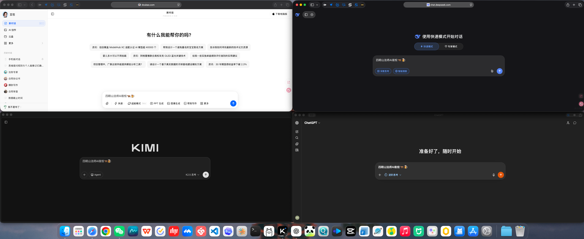
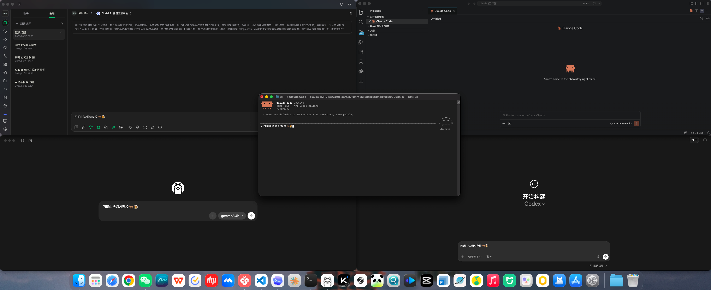

AI WORKFLOW EVOLUTION
四明山法师AI夜校
从单兵作战到多AI协同 · 工作流进化实录
时空对比
作战室
学习前
聊天窗口为主
学习后
命令行及多模态交互

BEFORE · 2026.03.01

AFTER · 2026.04.12
1 → 4
AI工具数量
+300%
∞
并行处理能力
质的飞跃
360°
问题覆盖度
全方位视角
∞
可能性边界
持续扩展
MISSION CONTROL CENTER
|
00:00:00
SYSTEM ONLINE
AI_NODES:
4 ACTIVE
Claude Code
核心代码执行引擎
PRIMARY
➜
~
claude
正在执行代码任务...
READ
EDIT
BASH
状态: 活跃
PID: 8080
Cherry Studio
AI模型聚合平台
AGGREGATOR
🍒 多模型统一管理中...
Claude
GPT-4
Gemini
已连接 8 个模型节点
专长: 模型聚合
Nodes: 8 active
CC Switch
Claude Code 快捷切换工具
SWITCHER
⚡ 快捷工作流切换中...
当前:
Claude Code
←→
Cherry Studio
Hotkey
Workflow
专长: 快捷切换
Bind: ⌘+⇧+C
Terminal
系统控制与自动化
SYSTEM
$ systemctl status ai-agent
● ai-agent.service - AI Workflow Manager
Active: active (running)
Tasks: 4 nodes synchronized
_
专长: 系统控制
Shell: zsh
DATA FLOW MONITOR
INPUT:
4.2MB/s
OUTPUT:
2.8MB/s
Claude → Kimi: document_analysis_request | context_size: 128K | status: processing...
Terminal → ChatGPT: creative_task_init | prompt_length: 256 | status: completed
Kimi → Claude: analysis_result | tokens_used: 4096 | confidence: 0.94
WORKFLOW ARCHITECTURE
C
Claude
K
Kimi
G
GPT
$
Term
Output